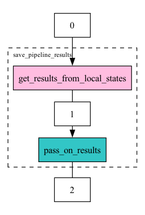

Workflow graph
The workflow graph below illustrates the sequence of operations in the design matrix construction process. It shows how data flows between local centers and the aggregation server during the save_pipeline_results function.

For a detailed breakdown of the shared states and their contents at each step, please refer to the table below.
API
Module to implement Mixin to get results as a shared state.
SavePipelineResults
Bases: AggPassOnResults
Mixin class to save pipeline results.
Attributes:
| Name | Type | Description |
|---|---|---|
local_adata |
AnnData
|
Local AnnData object. |
results |
dict
|
Results to share. |
VARM_KEYS |
list
|
List of keys to extract from the varm attribute. |
UNS_KEYS |
list
|
List of keys to extract from the uns attribute. |
Methods:
| Name | Description |
|---|---|
save_pipeline_results |
Save the pipeline results. These results will be downloaded at the end of the pipeline. They are defined using the VARM_KEYS and UNS_KEYS attributes. |
get_results_from_local_states |
Get the results to share from the local states. |
Source code in fedpydeseq2/core/deseq2_core/save_pipeline_results.py
14 15 16 17 18 19 20 21 22 23 24 25 26 27 28 29 30 31 32 33 34 35 36 37 38 39 40 41 42 43 44 45 46 47 48 49 50 51 52 53 54 55 56 57 58 59 60 61 62 63 64 65 66 67 68 69 70 71 72 73 74 75 76 77 78 79 80 81 82 83 84 85 86 87 88 89 90 91 92 93 94 95 96 97 98 99 100 101 102 103 104 105 106 107 108 109 110 111 112 113 114 115 116 117 118 119 120 121 122 123 124 125 126 127 128 129 130 131 132 133 134 135 136 137 138 139 140 141 142 143 144 145 146 147 148 149 150 151 152 153 | |
get_results_from_local_states(data_from_opener, shared_state)
Get the results to share from the local states.
Parameters:
| Name | Type | Description | Default |
|---|---|---|---|
data_from_opener
|
AnnData
|
AnnData returned by the opener. Not used. |
required |
shared_state
|
dict
|
Not used. |
required |
Returns:
| Type | Description |
|---|---|
dict
|
Shared state containing the gene names, as well as selected fields from the varm and uns attributes. |
Source code in fedpydeseq2/core/deseq2_core/save_pipeline_results.py
save_pipeline_results(train_data_nodes, aggregation_node, local_states, round_idx, clean_models)
Build the results that will be downloaded at the end of the pipeline.
Parameters:
| Name | Type | Description | Default |
|---|---|---|---|
train_data_nodes
|
List of TrainDataNode. |
required | |
aggregation_node
|
The aggregation node. |
required | |
local_states
|
Local states. Required to propagate intermediate results. |
required | |
round_idx
|
Index of the current round. |
required | |
clean_models
|
Whether to clean the models after the computation. |
required |
Source code in fedpydeseq2/core/deseq2_core/save_pipeline_results.py
Table with shared quantities between centers and server
| ID | Name | Type | Shape | Description | Computed by | Sent to |
|---|---|---|---|---|---|---|
| 1 | gene_names | Index | \((G,)\) | The gene names. | Each center | Server |
| 1 | _squared_logres | float | \(()\) | The squared mean absolute deviation of the difference between the log of the genewise dispersions and the log of the fitted dispersions, restricted to the non-zero genes whose gene-wise dispersions are above \(100\times \texttt{min\_disp}\). The mean absolute deviation estimate is defined as the median of the absolute difference between the log residual and its median, scaled by the percent point function of the normal distribution at \(0.75\). | Each center | Server |
| 1 | prior_disp_var | float | \(()\) | A prior on the variance of the log dispersions around the log trend curve \(\sigma_{\texttt{trend}}^2\), estimated as the maximum between \(0.25\) and \(\texttt{\_squared\_log\_res} - \psi_1((n-p)/2)\), where \(\psi_1(f/2)\) is the variance of the log of a \(\chi^2_f\) distribution. For more details, see \citep{love2014deseq2}. | Each center | Server |
| 1 | refitted | nparray | \((G,)\) | A boolean array marking genes which can be replaced and which, after replacing the count value by the imputation value, are non-zero. | Each center | Server |
| 1 | replaced | nparray | \((G,)\) | A boolean array marking genes \(g\) for which the Cook's distance is above the cutoff value for any sample in any center (the union of the local genes to replace across all centers). | Each center | Server |
| 1 | wald_se | nparray | \((G,)\) | For each gene, the standard error on the log fold change value for the given contrast given by the GLM. | Each center | Server |
| 1 | wald_statistics | nparray | \((G,)\) | For each gene, the Wald statistic of the gene expression. | Each center | Server |
| 1 | p_values | nparray | \((G,)\) | For each gene, the p-value of the Wald statistic, computed from the survival function of the normal distribution applied to the wald statistic, and set to \(\texttt{nan}\) if the gene is a Cook's outlier if \(\texttt{cooks\_filter}\) is enabled. | Each center | Server |
| 1 | contrast | list | A list of three strings representing the contrast of interest, in case it is not specified by the user. Of the form \(\texttt{[factor, level1, level2]}\). For example, \(\texttt{[stage, Advanced, Non-advanced]}\). | Each center | Server | |
| 1 | LFC | DataFrame | \((G, p)\) | The log fold changes of the gene expression. This dataframe is indexed by genes on one hand, and by design column names on the other. | Each center | Server |
| 1 | fitted_dispersions | nparray | \((G,)\) | For each gene \(g\) with zero counts across all centers, \(\texttt{nan}\). For each non-zero gene \(g\), either \(\alpha_{\texttt{trend}}(\overline{Z}_g)\) if the disp_function_type is "parametric" (i.e., the fitting of the parameters has converged), or \(\texttt{mean\_disp}\) otherwise (i.e., if the disp_function_type is "mean"). Denoted with \(\alpha^{\texttt{trend}}_g\). | Each center | Server |
| 1 | non_zero | nparray | \((G,)\) | A boolean array indicating which genes have non-zero counts in at least one center. | Each center | Server |
| 1 | genewise_dispersions | nparray | \((G,)\) | For each gene \(g\), the current estimate of the dispersion parameter \(\alpha_g\). This estimate is computed by first computing the global nll (summing all local nlls) as well as the global Cox-Reid regularization term, which is half the log determinant of the sum of the local Cox-Reid matrices. The Cox-Reid regularized nll per gene and per dispersion in the grid is obtained by summing the regularization term and the nll. Finally, for every gene, the dispersion parameter is estimated by taking the minizer of this regularized nll on the grid of size \(N_{\texttt{gs}}\). | Each center | Server |
| 1 | dispersions | nparray | \((G,)\) | The estimated dispersions for each gene, which are the MAP dispersions if the gene is not an outlier w.r.t. the trend curve, and the gene-wise dispersions otherwise. | Each center | Server |
| 1 | MAP_dispersions | nparray | \((G,)\) | For each gene \(g\), the current estimate of the MAP dispersion parameter \(\alpha_g\). This estimate is computed by first computing the global nll (summing all local nlls) as well as the global Cox-Reid regularization term, which is half the log determinant of the sum of the local Cox-Reid matrices, and the regularization coming from the prior on the log dispersions around the trend curve. The Cox-Reid, prior regularized nll per gene and per dispersion in the grid is obtained by summing the regularization terms and the nll. Finally, for every gene, the MAP dispersion parameter is estimated by taking the minizer of this regularized nll on the grid of size \(N_{\texttt{gs}}\). | Each center | Server |
| 1 | padj | Series | \((G,)\) | The adjusted p-values for each gene, computed from the p-values using independent filtering if the \(\texttt{independent\_filter}\) parameter is \(\texttt{True}\) (default), and the Benjamini-Hochberg procedure otherwise. | Each center | Server |
| 2 | prior_disp_var | float | \(()\) | A prior on the variance of the log dispersions around the log trend curve \(\sigma_{\texttt{trend}}^2\), estimated as the maximum between \(0.25\) and \(\texttt{\_squared\_log\_res} - \psi_1((n-p)/2)\), where \(\psi_1(f/2)\) is the variance of the log of a \(\chi^2_f\) distribution. For more details, see \citep{love2014deseq2}. | Server | All |
| 2 | refitted | nparray | \((G,)\) | A boolean array marking genes which can be replaced and which, after replacing the count value by the imputation value, are non-zero. | Server | All |
| 2 | replaced | nparray | \((G,)\) | A boolean array marking genes \(g\) for which the Cook's distance is above the cutoff value for any sample in any center (the union of the local genes to replace across all centers). | Server | All |
| 2 | wald_se | nparray | \((G,)\) | For each gene, the standard error on the log fold change value for the given contrast given by the GLM. | Server | All |
| 2 | wald_statistics | nparray | \((G,)\) | For each gene, the Wald statistic of the gene expression. | Server | All |
| 2 | p_values | nparray | \((G,)\) | For each gene, the p-value of the Wald statistic, computed from the survival function of the normal distribution applied to the wald statistic, and set to \(\texttt{nan}\) if the gene is a Cook's outlier if \(\texttt{cooks\_filter}\) is enabled. | Server | All |
| 2 | padj | Series | \((G,)\) | The adjusted p-values for each gene, computed from the p-values using independent filtering if the \(\texttt{independent\_filter}\) parameter is \(\texttt{True}\) (default), and the Benjamini-Hochberg procedure otherwise. | Server | All |
| 2 | non_zero | nparray | \((G,)\) | A boolean array indicating which genes have non-zero counts in at least one center. | Server | All |
| 2 | fitted_dispersions | nparray | \((G,)\) | For each gene \(g\) with zero counts across all centers, \(\texttt{nan}\). For each non-zero gene \(g\), either \(\alpha_{\texttt{trend}}(\overline{Z}_g)\) if the disp_function_type is "parametric" (i.e., the fitting of the parameters has converged), or \(\texttt{mean\_disp}\) otherwise (i.e., if the disp_function_type is "mean"). Denoted with \(\alpha^{\texttt{trend}}_g\). | Server | All |
| 2 | genewise_dispersions | nparray | \((G,)\) | For each gene \(g\), the current estimate of the dispersion parameter \(\alpha_g\). This estimate is computed by first computing the global nll (summing all local nlls) as well as the global Cox-Reid regularization term, which is half the log determinant of the sum of the local Cox-Reid matrices. The Cox-Reid regularized nll per gene and per dispersion in the grid is obtained by summing the regularization term and the nll. Finally, for every gene, the dispersion parameter is estimated by taking the minizer of this regularized nll on the grid of size \(N_{\texttt{gs}}\). | Server | All |
| 2 | dispersions | nparray | \((G,)\) | The estimated dispersions for each gene, which are the MAP dispersions if the gene is not an outlier w.r.t. the trend curve, and the gene-wise dispersions otherwise. | Server | All |
| 2 | MAP_dispersions | nparray | \((G,)\) | For each gene \(g\), the current estimate of the MAP dispersion parameter \(\alpha_g\). This estimate is computed by first computing the global nll (summing all local nlls) as well as the global Cox-Reid regularization term, which is half the log determinant of the sum of the local Cox-Reid matrices, and the regularization coming from the prior on the log dispersions around the trend curve. The Cox-Reid, prior regularized nll per gene and per dispersion in the grid is obtained by summing the regularization terms and the nll. Finally, for every gene, the MAP dispersion parameter is estimated by taking the minizer of this regularized nll on the grid of size \(N_{\texttt{gs}}\). | Server | All |
| 2 | gene_names | Index | \((G,)\) | The gene names. | Server | All |
| 2 | _squared_logres | float | \(()\) | The squared mean absolute deviation of the difference between the log of the genewise dispersions and the log of the fitted dispersions, restricted to the non-zero genes whose gene-wise dispersions are above \(100\times \texttt{min\_disp}\). The mean absolute deviation estimate is defined as the median of the absolute difference between the log residual and its median, scaled by the percent point function of the normal distribution at \(0.75\). | Server | All |
| 2 | LFC | DataFrame | \((G, p)\) | The log fold changes of the gene expression. This dataframe is indexed by genes on one hand, and by design column names on the other. | Server | All |
| 2 | contrast | list | A list of three strings representing the contrast of interest, in case it is not specified by the user. Of the form \(\texttt{[factor, level1, level2]}\). For example, \(\texttt{[stage, Advanced, Non-advanced]}\). | Server | All |